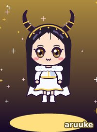
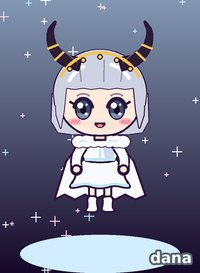
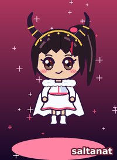
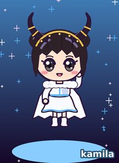

✦ drawn by me in the Ak Börü stage outfits: the white wolf capes and the Morkhan horns (it's folklore, Aruuke said so herself, it's a costume, calm down everyone's grandmother). positions are official. symbols, colours and nicknames are ours, the balapan's.

Aruuke Temir kyzy
Аруке Темир кызы
| position | leader, vocals |
| symbol | the golden eagle (the group's own name, so the leader gets it) |
| colour | #ffd24a (the fandom colour, we chose it in 2024 in a Tulpar poll, 312 votes) |
| balapan call her | kapitan |
| ✦ | born 1999, Talas |
| ✦ | sang in the children's choir of the Irad Palace of Art |
| ✦ | won a place at the 2017 Kök Ay auditions |
| ✦ | wears a little cross on stage (look at the Ak Börü stage, it's there under the cape) |
bermet says: the high note in the 2021 version of Uchuu. I have listened to it maybe 400 times. she is the leader because when the other four talk at once she says one word and they stop. (I saw it at the Altyn-Zhylky 2023 broadcast.)

Dana Pak
Дана Пак
| position | lead dancer |
| symbol | the white wolf (she made the wolf dance) |
| colour | #bfe6ff (the fandom colour, we chose it in 2024 in a Tulpar poll, 312 votes) |
| balapan call her | börüchük (little wolf) |
| ✦ | Koryo-saram, from Nurzhan |
| ✦ | choreographed the white wolf dance (the claw move in the chorus = the challenge) |
| ✦ | co-produced Ak Börü and Ilbirs on the EP |
| ✦ | her silver bob in the Ak Börü era. legendary |
bermet says: MY BIAS. she made the dance that half of Talas did in their kitchens in 2021, me included (my video has 34 views and my cousin falls over in it). when she does the claw on the last chorus I scream every time, even on my phone.

Saltanat Abdrakhmanova
Салтанат Абдрахманова
| position | rap |
| symbol | the Morkhan horns (she wears them like she owns them) |
| colour | #ff4f7b (the fandom colour, we chose it in 2024 in a Tulpar poll, 312 votes) |
| balapan call her | saltysh |
| ✦ | the rapper of the group |
| ✦ | NO relation to the old Governor (everyone asks, stop asking) |
| ✦ | high ponytail, red streak, the smirk |
| ✦ | the one who looks into the camera like she knows your password |
bermet says: her rap parts are the only ones my dad knows. he pretends he doesn't like Mor-Pop but he does the smirk when he hears her.
Meerim Sultan kyzy
Мээрим Султан кызы
| position | vocals |
| symbol | the kekilik, the mountain partridge (because of Kekilik, her yodel song) |
| colour | #c39bff (the fandom colour, we chose it in 2024 in a Tulpar poll, 312 votes) |
| balapan call her | ai-meerim |
| ✦ | vocals |
| ✦ | the yodel flip in Kekilik (track 2) |
| ✦ | always the partridge-feather hairpin in my drawings (fan thing, not official) |
| ✦ | laughs with her whole face |
bermet says: if Aruuke is the high note then Meerim is the floor everything stands on. listen to the end of Kekilik with headphones. that is her.

Kamila Nurlan
Камила Нурлан
| position | vocals, sing-rap |
| symbol | the blue fox (Kök Tülkü is her song in my heart) |
| colour | #57b8ff (the fandom colour, we chose it in 2024 in a Tulpar poll, 312 votes) |
| balapan call her | tülkü |
| ✦ | vocals and the cute sing-rap bits (Saltanat does the hard rap, Kamila does the fun one) |
| ✦ | the two buns (my drawings. sometimes real) |
| ✦ | the funniest in the behind-the-scenes clips |
| ✦ | Kök Tülkü on the EP: her lines in the second verse |
bermet says: she makes the others laugh in every backstage video and then turns around and sings like that. how. HOW.